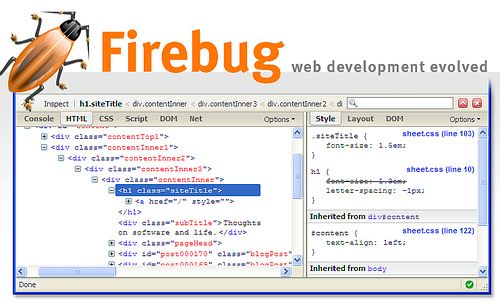

I've taken the time to write out some quick tips, tricks, and troubleshooting techniques that are intended to get you answers faster than I could ever answer an email. Take a few minutes and read through this before sending me an email or message on the product board.
How can I change the appearance of this theme? The most commont questions that get asked are for small styling customizations. Specifically, people often want to know how to change a specific styling element (ie: changing font from black to red), but can't find the corresponding line in the CSS.
Answer: I highly recommend that everyone picks up the Firebug plugin for your browser. http://getfirebug.com/ In short, this tool will allow you to quickly find an element in the design and "inspect it" by Right Clicking it, revealing the CSS that's styling it and providing you with an exact location in the template where you can make your own edits and customizations.
You've uploaded the template and it doesn't seem to be working. The second most common problem that people encounter are corrupted downloads and uploading your template to the wrong location.
Answer: First, try redownloading the file from ThemeForest or wherever you've recieved the file from just to make sure that nothing was broken during delivery. Then read and re-read the installation instructions on how to upload the template properly. This isn't difficult in the case of HTML templates, but it gets a little trickier with Wordpress themes if you've never done it before. Just make sure you are uploading the right files to the right place and it should solve the problem.
Right now I'm simply getting more emails and requests for support than I can manage in a timely manner. Some times I can answer emails the same day, but often it'll take me as long as a month (or longer!) to completely empty my inbox. There are a number of things you can do to answer questions for yourself though, and I urge buyers to take matters into your own hands by using a few quick tricks that will very likely get you an answer a lot quicker than I can.
Tips for All Templates:
1. Check the product's documentation. I took the time to write it, you should take the time to read it :). You'll be surprised how many simple questions get answered in that document.
2. Check the product's FAQ section. You'll find it right next to the discussion board. I'll do my best to keep this updated with the latest questions.
3. Search Google: Run a Google search for your problem. Lots of questions aren't specific to any one product - in these cases, there is a treasure trove of information that's freely available on the web. Yes, this will take a little time and effort on your part; but you'll be teaching yourself valuable information this way as well!
For instance, searching "how to center my navigation" will turn up a number of solutions a lot quicker than I can get back to you over email.
4. Check the product's discussion board. There's a good chance someone has had the question already and there's an answer waiting for you there. If not, feel free to post a simple question there (be polite please!) and I'll do my best to get you an answer. For more in depth questions, use my email box from my profile page.
5. Customizing 3rd Party Plugins: If you are trying to customize, edit, or remove a third party plugin that's been included in this download (ie: a lightbox script, a slider, CUFON, SIFR, etc.), please check the official website for that script. I didn't write the script myself and they are the official experts. Double check the documentation to find the right websites to check out.
6. Adding New 3rd Party Plugins: If you are trying to install a third party plugin outside of what's recommended, check with that plugin's author to see if it conflicts with any existing plugins. Not all plugins play nicely together, and some just won't work together on the same site.
Wordpress Templates:
Unfortunately, I have to be very limited with how much I can help with buyers who want to customize Wordpress themes. This isn't because I don't want to, but in most cases, even simple customizations in Wordpress can require lengthy and complex answers if you've never worked with the theme coding before. Please use the following steps to find answers to your customization requests (and you'll learn some cool stuff along the way!).
7. Check the Wordpress Codex: If you are using a Wordpress theme, there's a very good chance the question has already been answered somewhere on the Wordpress Codex. http://codex.wordpress.org
8. Search Google: I know, I mentioned this one already above. I really can't emphasize how valuable a couple minutes of searching Google can be though. A few minutes on Google will get you an answer a lot quicker than I can get to my inbox. Be sure to check out the popular Wordpress blogs and tutorial sites, which are chalk full of cool and useful information. It might not answer your question precisely, but it will probably give you a good set of directions to start with.
Finally - if you've gone through these steps and still can't find an anwer, send me an email from my profile page on ThemeForest. This is the only email box that I'll be using for support, so it's the best place to contact me directly.
Oh, just a side note. Please don't call my personal phone, send me a personal Facebook message, or mail a list of questions to my house (all of which have happened!). I promise you that I'll be doing my best to keep up with any bugs or questions that come my way, but please be patient, polite, and wait your turn in line to recieve an answer. Cheers!